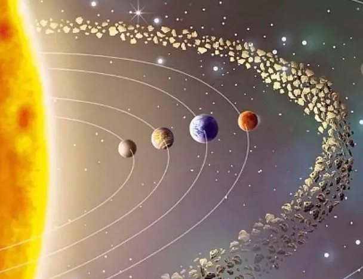
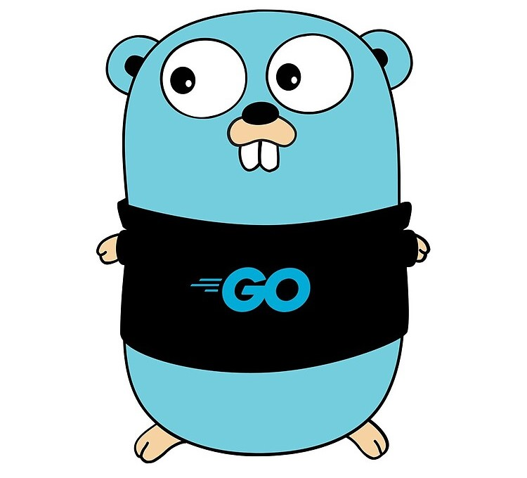
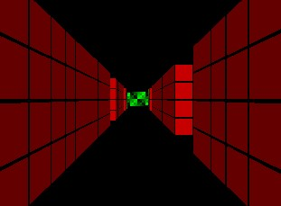
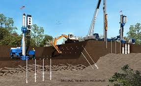

This is an inner solar system orbital simulator. Each object in the simulation checks the distance to each object to calculate gravitational force applied to the subject. The distance between each body is displayed in the interface and different options to view the simulation at differing time frames are available. Due to the scale of the solar system only the inner planets of the solar system are modeled. If the outter system were modeled the inner planets would be difficult to impossible to see.


An API that allows the user to check a database and to check available books in and out based on Author, Title, or Unique ID. The Quantity of available books is updated when a book is checked in or out. Additionally the user is able to create new books to add to the database.

I will describe my game and its methods here.

This program takes in an Array of a 2d grid and uses a series of trigonometric calculations to produce a 3d enviroment by measuring the distance from the viewer. This uses Python with the Pygame library.

The first project I built while learning python initially. The project is meant to take labratory data from soil samples from a companies database and process the raw data into useable engineering values. These values are then ran through the correct equations to produce the values an engineer needs to make an assesment. A geotechnical report is then produced using these values.